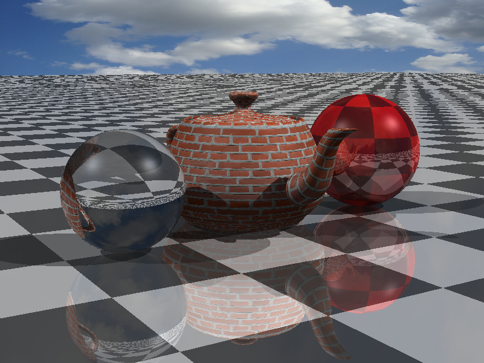

CS6620 - Ray Tracing for Graphics
Project 7 - Textures.
Results
My render currently takes 3:52. I still feel like this is much too long. I will be working on figuring out where this slow down is
occurring and hopefully solve the problem. I did not get the chance to implement any filtering.

Machine Specs
Running Windows 10 on a Bootcamped MacBook Pro
| Processor |
Intel Core i7 2.50 GHz |
| RAM |
16GB 1600 MHz DDR3 |
| Graphics Card |
Intel Iris Pro 1536 MB |